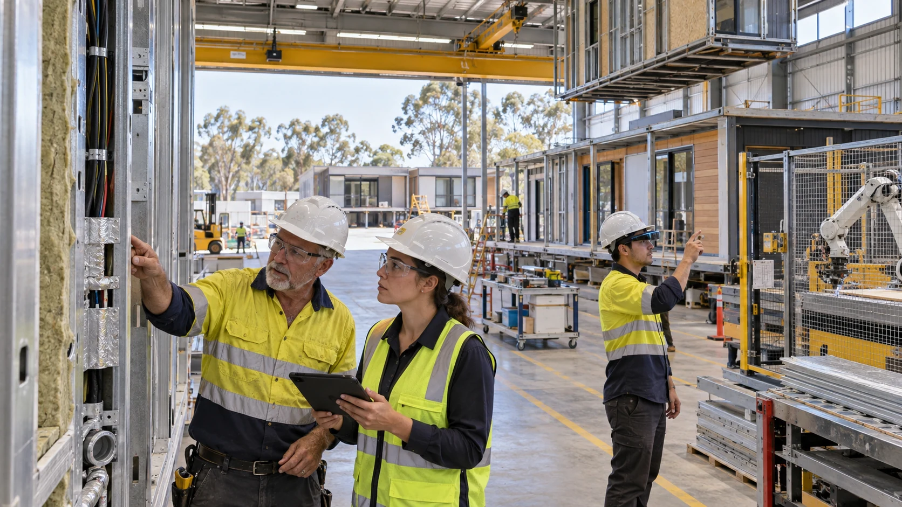

Excavate
Measure the sand and water coming out.
 Sandworm Subterranean SystemsMoreton Bay research & development
Sandworm Subterranean SystemsMoreton Bay research & developmentChapter 07 / 17 · Spoil & energy
What if the material we dig out became the material we build with, the energy we store and the products we make locally?
Imagine each 100 metres of tunnel producing a fresh supply of sand for a local factory. Some might be suitable for interlocking blocks, tiles, glass, service parts or heat storage. The rest still needs somewhere safe to go.
Measure the sand and water coming out.
Find useful material and identify contaminants.
Use automated equipment to turn it into products.
Build, repair, dismantle and recover.
Different sands contain different minerals. Test salt, moisture, grain size, silica, heavy minerals, contaminants and naturally occurring radioactivity where relevant. Confirm who owns the material and which uses are allowed before treating it as income.
This tool gives an illustrative volume, not a prediction of saleable sand. Water, unsuitable material, storage, testing and processing all matter.
Building pieces that fit together, can be moved and can be handled by robots.
Drainage, air, power, fibre, sensors and inspection access in replaceable pieces.
Gumpi and Ballow Road could explore seating, shelters, paths, terraces and sport or market structures.
Filters, tiles, household products and new materials. Ordinary sand isn't automatically high-purity silicon.
Investigate oyster-crete, reef habitat, living shorelines, surf banks and aquaculture parts. Each needs separate ecological evidence and permission.
Test sand for thermal storage, tunnel linings and suitable heavy masses for gravity storage.

The Clean Energy Superpower material ledger works in 100-metre tunnel sections. The earlier 1 km per week aspiration is not achieved Sandworm production. Track actual rate, quality, rejects, finished products and demand.
The clean-energy ideas go beyond putting solar panels on a roof. Ask how to power local machines, store spare energy and use materials we already have.
Rooftops, car park shade and solar paving could power equipment. Concentrated solar heat is another research path.
Sand and rock can hold heat; batteries store electricity. Explore home, community and flow batteries, hot water and cooling.
Lift a heavy mass using spare power, then recover some energy when it comes down. The height difference matters.
Explore contained water storage at different elevations. Don't assume island lakes or aquifers are available reservoirs.
Research pressure storage, heat recovery, ventilation, fire response and backup power. Ordinary tunnels aren't pressure vessels.
Explore desalination, renewable hydrogen, oxygen, heat and useful minerals from brine, accounting for energy and waste.
Explore motion, oscillation and pressure rather than underwater rotating blades. Assess marine impacts.
Coordinate generation, storage, flexible use and local ownership, including community batteries.
Think of lifting a heavy weight and letting it descend later through a generator. A horizontal tunnel alone doesn't provide the height difference needed for this.
As the Gumpi loop develops, each stretch could provide material for supporting infrastructure. Local workers and communities could own part of that manufacturing business. This is not a proposal to restart historic sandmining.
Straddie Clean Energy Superpower ↗ · Maker-Space Lab ↗ · Tip Loop Lab ↗
Turn sand into roads and paths · Explore new materials · Own the machines and products.